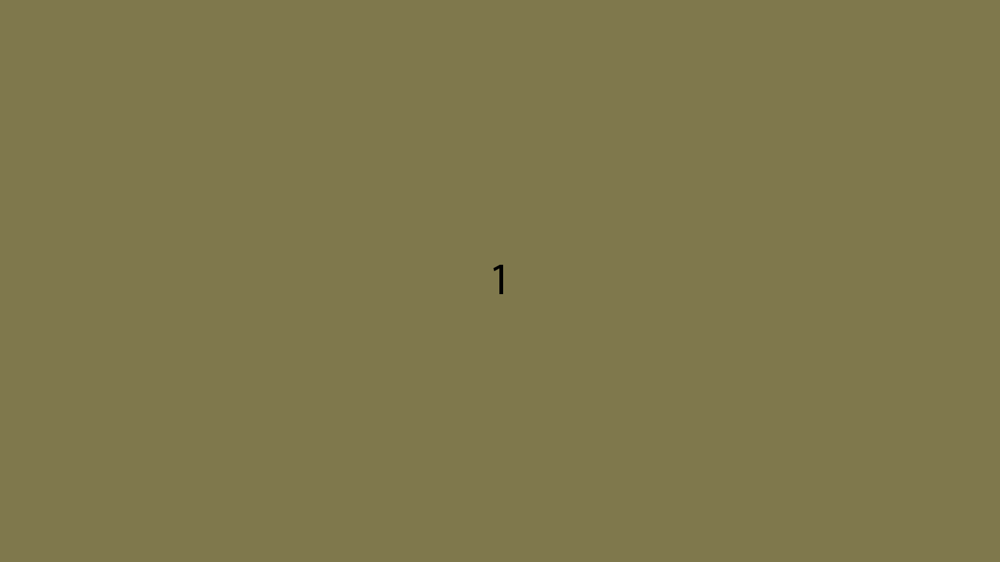
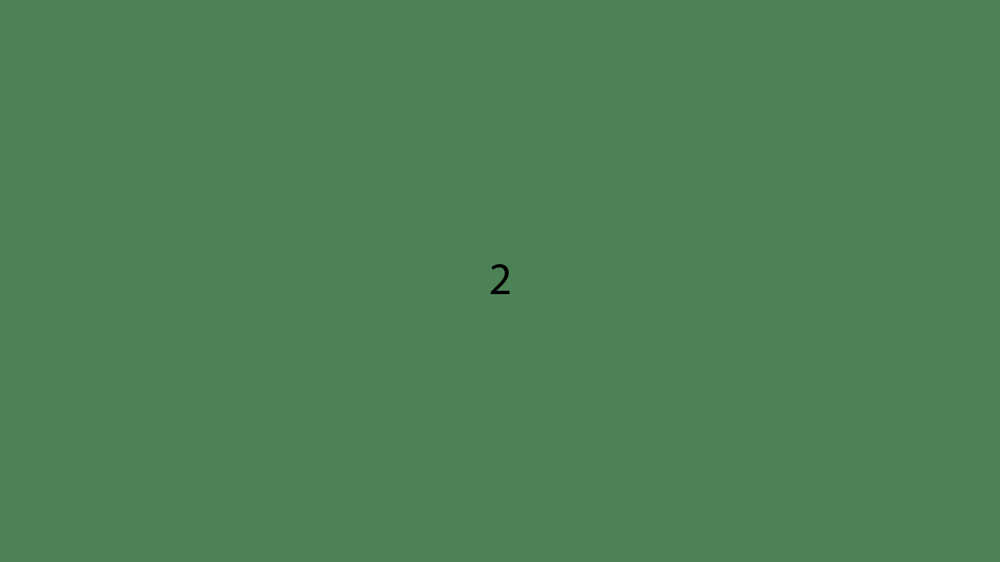
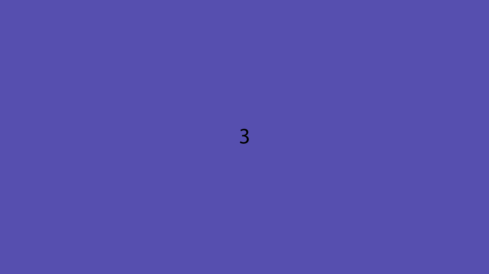

TF
Foster Design System
Typography
Colours
Images
Spacing
Navigation
Forms
Lists
Accordions
Cards
Carousels
Modals
Carousels
HTML for carousel example:
<!-- Carousel container --> <div class="carousel"> <!-- Full images with numbers and message Info --> <div class="carousel-container">  <div class="carousel-info">First caption</div> </div> <div class="carousel-container">  <div class="carousel-info">Second Caption</div> </div> <div class="carousel-container">  <div class="carousel-info">Third Caption</div> </div> <!-- Back and forward buttons --> <a class="carousel-back" onclick="plusSlides(-1)">❮</a> <a class="carousel-forward" onclick="plusSlides(1)">❯</a> </div> <br> <!-- The circles/dots --> <div style="text-align:center"> <span class="carousel-dots" onclick="currentSlide(1)"></span> <span class="carousel-dots" onclick="currentSlide(2)"></span> <span class="carousel-dots" onclick="currentSlide(3)"></span> </div>
CSS for carousel example:
/* Carousel container */ .carousel { max-width: 1000px; position: relative; margin: auto; } /* Make the images invisible by default */ .carousel-container { display: none; } /* forward & Back buttons */ .carousel-back, .carousel-forward { cursor: pointer; position: absolute; top: 48%; width: auto; margin-top: -23px; padding: 17px; color: grey; font-weight: bold; font-size: 19px; transition: 0.4s ease; border-radius: 0 5px 5px 0; user-select: none; } /* Place the "forward button" to the right */ .carousel-forward { right: 0; border-radius: 4px 0 0 4px; } /*when the user hovers,add a black background with some little opacity */ .carousel-back:hover, .carousel-forward:hover { background-color: rgba(25, 25, 25, 0.8); } /* Caption Info */ .carousel-info { color: black; padding: 10px 14px; text-align: center; } /* The circles or bullets and indicators */ .carousel-dots { cursor: pointer; height: 16px; width: 16px; margin: 0 3px; background-color: rgba(25, 25, 25, 0.2); border-radius: 50%; display: inline-block; transition: background-color 0.5s ease; } .enable, .dots:hover { background-color: rgba(25, 25, 25, 0.8); }
JavaScript for carousel example:
let slidePosition = 1; SlideShow(slidePosition); // forward/Back controls function plusSlides(n) { SlideShow(slidePosition += n); } // images controls function currentSlide(n) { SlideShow(slidePosition = n); } function SlideShow(n) { let slides = document.getElementsByClassName("carousel-container"); let circles = document.getElementsByClassName("carousel-dots"); if (n > slides.length) { slidePosition = 1 } if (n < 1) { slidePosition = slides.length } for (let i = 0; i < slides.length; i++) { slides[i].style.display = "none"; } for (let i = 0; i < circles.length; i++) { circles[i].className = circles[i].className.replace(" enable", ""); } slides[slidePosition - 1].style.display = "block"; circles[slidePosition - 1].className += " enable"; } // Automatically scroll slides window.setInterval(function() { plusSlides(1); }, 4000);
First caption
Second Caption
Third Caption
❮
❯